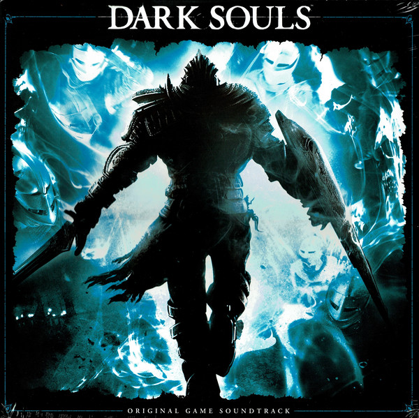

Dark Souls (яп. ダークソウル Да:ку Соуру, рус. Тёмные души) — видеоигра в жанре action/RPG, разработанная компанией From Software. Первоначально анонсированная как Project Dark, являет собой духовного наследника предыдущей игры от той же From Software — Demon's Souls.
PC-версия, расширенная по сравнению с консольными и названная Prepare To Die Edition, была выпущена 24 августа 2012. DLC с новым контентом было анонсировано для обеих консолей и было выпущено в октябре 2012.